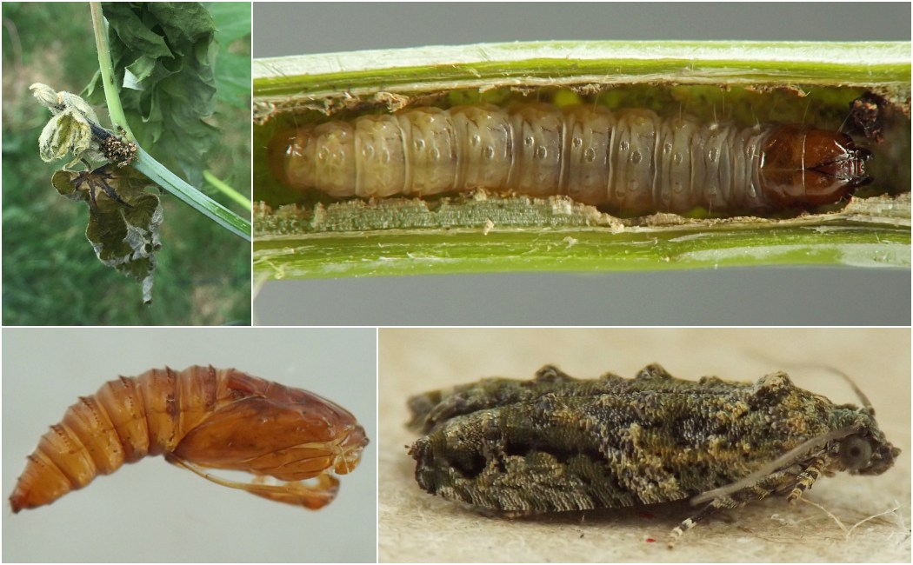
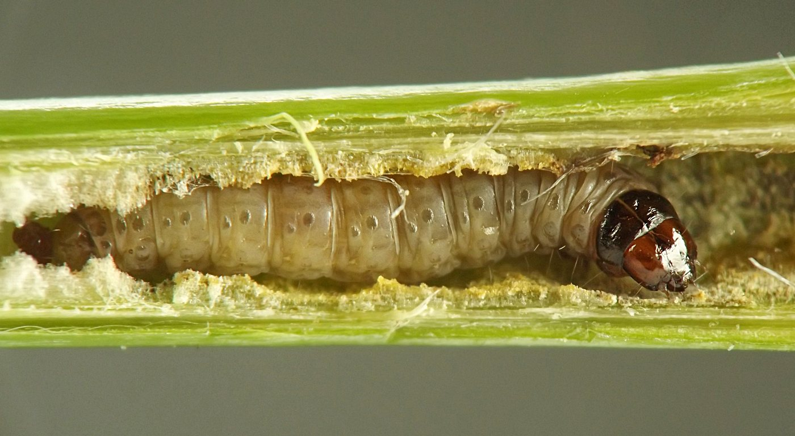
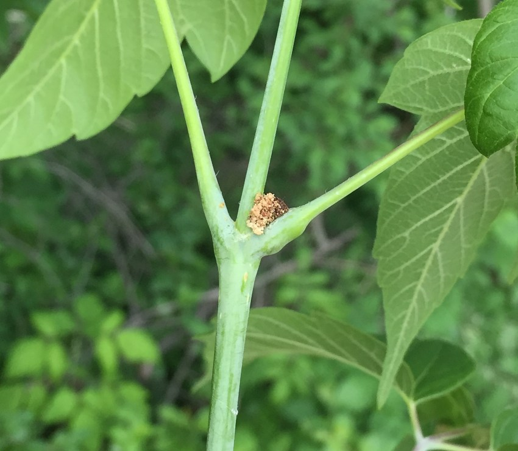
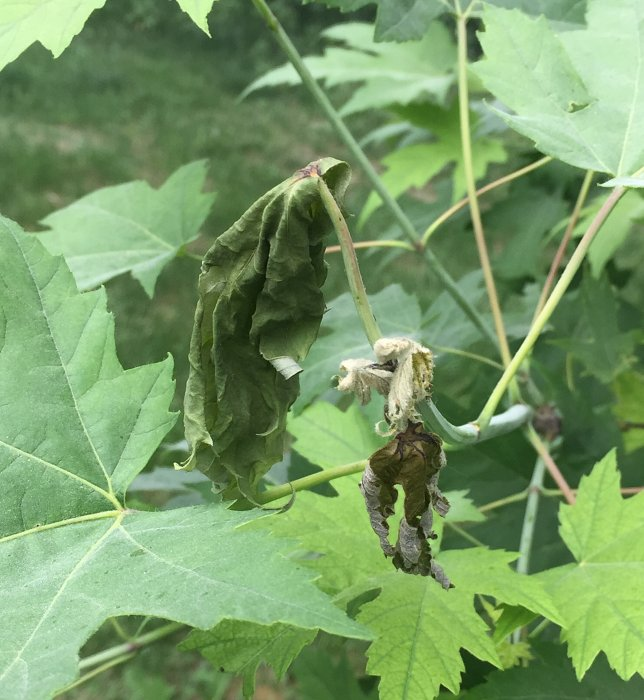
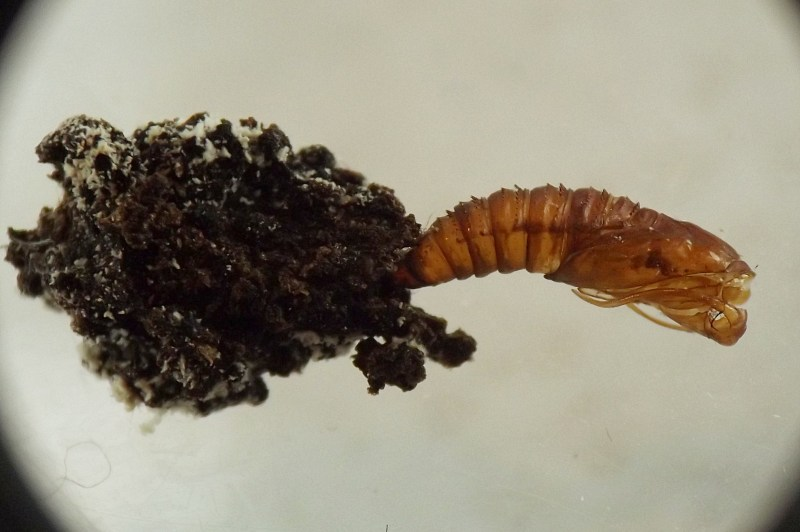
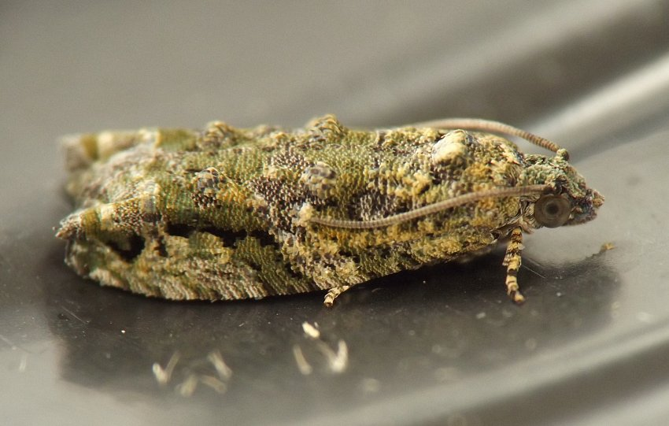

Stem borer (Lepidoptera: Tortricidae) in Acer
| Record no.: | 0002, 0005 |
|---|---|
| Feeding guild: | Stem borer |
| Taxonomy: | Lepidoptera: Tortricidae: cf. Proteoteras sp. |
| Stages observed: | trace, larva, pupa, adult |
| Distribution observed: | IA |
| Hosts in Acer: | A. negundo (boxelder); A. saccharinum (silver maple) |
In June 2023, I located larvae in a silver maple tree and a boxelder tree growing only about 200 feet from one another, and I reared the larvae to adulthood. I photographed additional examples from two locations in 2022 and 2023 but did not attempt to rear the larvae.
Both leaf petioles and stems of current-year shoots on the host trees may be tunneled. In one of the examples from boxelder that I found in early June 2022, the main stem was the feeding site and it was distorted into a gall-like swelling. In the examples collected for rearing in 2023, the stem of the shoot was again the main feeding site in both silver maple and boxelder, and in boxelder the larva's tunnel extended into a leaf petiole, with the base of the petiole becoming slightly swollen, and with frass being ejected through a small hole in the petiole base and accumulating in a noticeable wad on the petiole exterior. Similarly, a silver maple petiole inhabited by a young larva in late May was slightly swollen due to the larva's presence.
Reared larvae finished their tunneling in the main stem of the shoot by mid-June. The individual from silver maple pupated in a large agglomeration of wet black frass at the terminus of the affected shoot, while the boxelder larva pupated off the plant in a silk cocoon spun on the side of the rearing container. Adults emerged at the end of June. At least four species of Proteoteras are recorded from stems of Acer (Gallformers Contributors 2023a-e; Solomon 1995) and it is not known how many of them may be involved in the observations just described.

 Prev
Prev
{kind=link}
{kind=link}

{kind=link}

{kind=link}

{kind=link}

{kind=link}

- Solomon, J.D. 1995. Guide to insect borers in North American broadleaf trees and shrubs. USDA Forest Service Agriculture Handbook AH-706.[return to in-text citation]
- Gallformers Contributors. 2023a. "Proteoteras aesculana," notes on ID and taxonomy. Gallformers website, www.gallformers.org. Retrieved December 6, 2023 from https://gallformers.org/gall/547. [return to in-text citation]
- Gallformers Contributors. 2023b. "Proteoteras crescentana," notes on ID and taxonomy. Gallformers website, www.gallformers.org. Retrieved December 6, 2023 from https://gallformers.org/gall/1962.
- Gallformers Contributors. 2023c. "Proteoteras moffatiana," notes on ID and taxonomy. Gallformers website, www.gallformers.org. Retrieved December 6, 2023 from https://gallformers.org/gall/1965.
- Gallformers Contributors. 2023d. "Proteoteras willingana," notes on ID and taxonomy. Gallformers website, www.gallformers.org. Retrieved December 6, 2023 from https://gallformers.org/gall/539.
- Gallformers Contributors. 2023e. Source no. 234. Gallformers website, www.gallformers.org. Retrieved December 6, 2023 from https://gallformers.org/source/234.
Page created: February 9, 2026. Last update: none